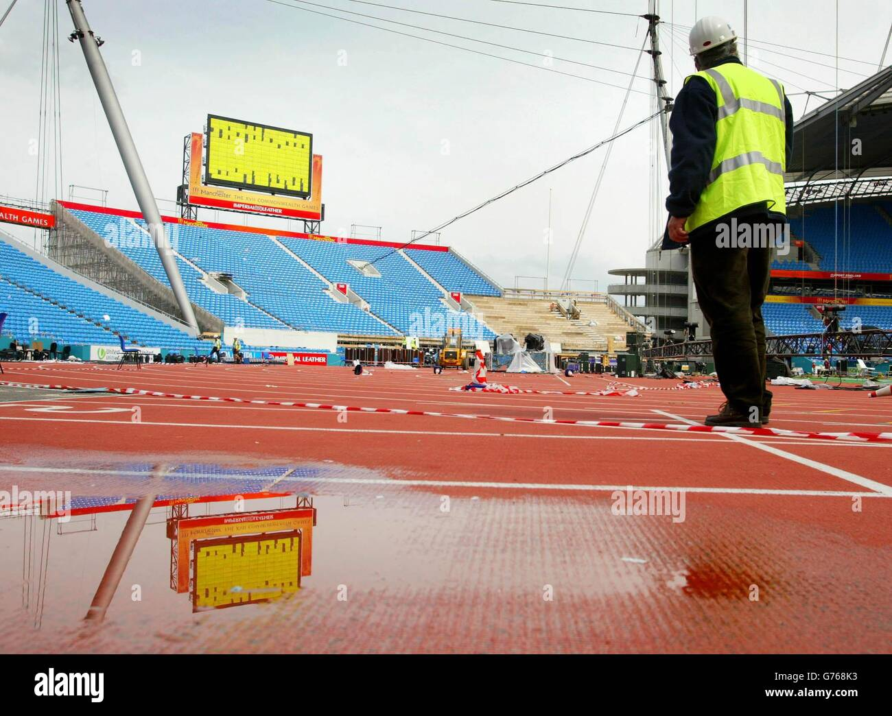
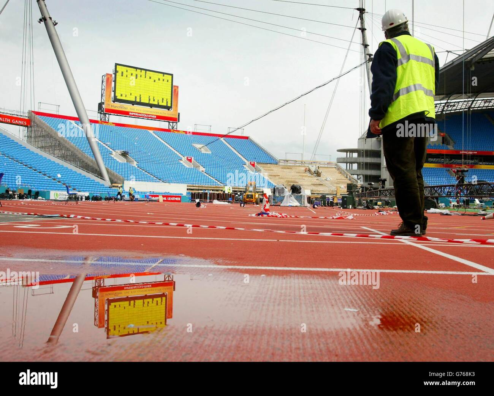
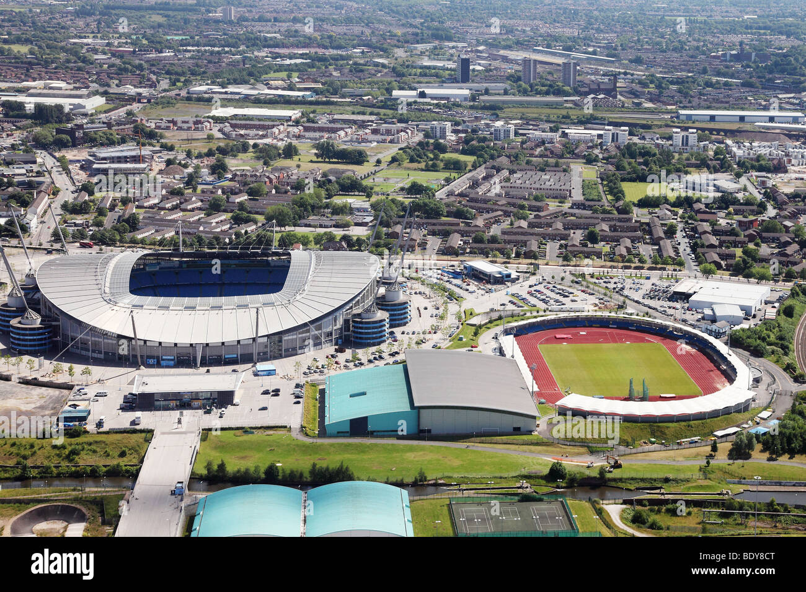
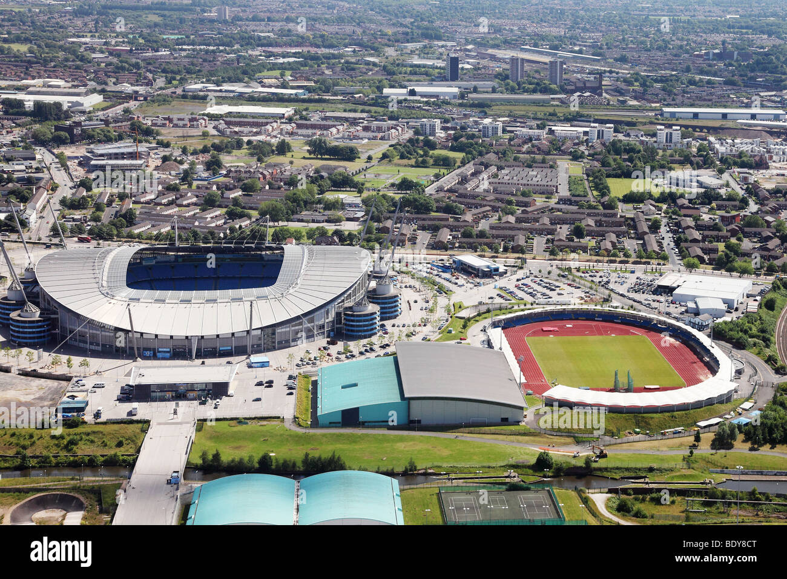

Ciudad Deportiva (City Football Academy)
Manchester City inauguró su ciudad deportiva, que contará con 16 campos de entrenamiento, un estadio con capacidad para 7.000 espectadores y alojamientos de cuatro estrellas para los jugadores durante las concentraciones del equipo..
El proyecto, iniciado en 2008, cuenta además con un auditorio con 56 butacas para que técnicos y jugadores puedan visualizar grabaciones de los partidos. El complejo está conectado con el Etihad Stadium, campo del City, a través de un largo puente, por lo que los desplazamientos del primer equipo en los partidos de casa serán mucho más sencillos.
Patrick Vieira, excentrocampista francés y actual entrenador del filial citizen, valoró muy positivamente la inversión realizada por los propietarios del club y reconoció que «ayudará a reclutar jóvenes talentos».
El lateral derecho Pablo Zabaleta reconoció que Leo Messi quedó impresionado con las instalaciones, cuando se ejercitaron en los campos de entrenamiento con la selección de Argentina antes del choque amistoso frente a Portugal.
City estará a la altura de los grandes clubes europeos como el Barça, el Real Madrid o el Milan, que cuentan con ciudades deportivas del máximo nivel.

 


 
